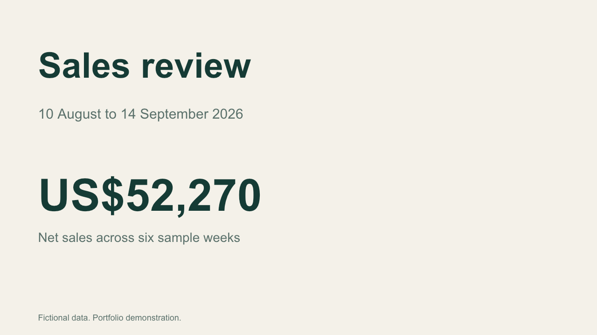
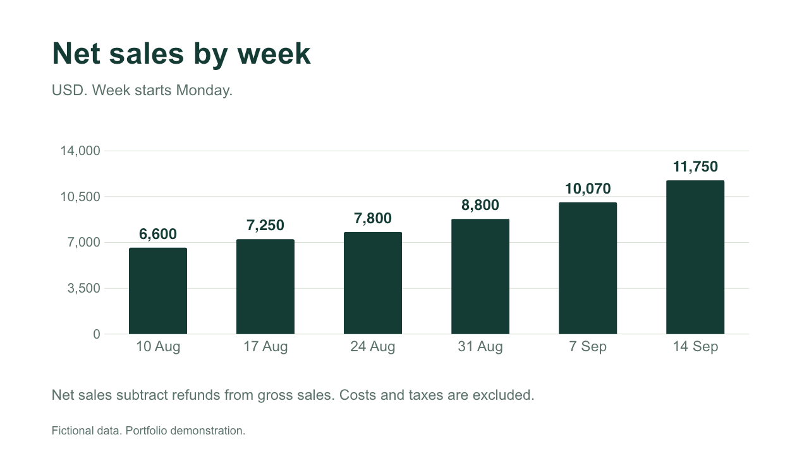
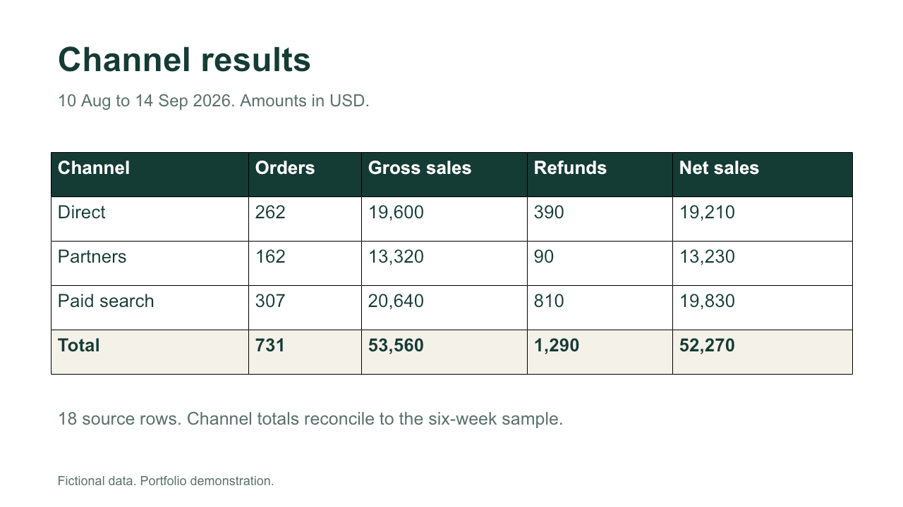

{kind=link}
{kind=link}
{kind=link}
One recurring report
Define the source, five metrics at most, and a sample result. Start with an anonymized example and confirm what each row represents.
Explore a report built from one fictional CSV. Filter sales, refunds and channel performance, then inspect the source rows and reconciled totals.
Self-initiated work built with AI assistance. This is a demonstration, not a client engagement.
Filter the sample, or load a CSV in the same format.
USD · Week starts Monday · Filtered dates only
Every total traces back to the uploaded rows.
| Channel | Orders | Net sales |
|---|---|---|
| Total |
Files stay in this browser tab. No upload, account or external service is used by this demo. Download the sample CSV.
Required columns: date,channel,orders,gross_sales,refunds. One row per date and channel. Dates: YYYY-MM-DD. Amounts: USD, decimal point, no currency symbols. Maximum 10,000 rows / 2 MB. Refunds refer to the same sales cohort and must not exceed its gross sales. Duplicate keys and missing values are rejected. A different format is mapped during a paid project. XLSX import is not included in this browser demo.
Three slides using the same fictional sales data: a summary, a weekly chart and a channel table.



This original sample contains editable text, one native chart and one native table. It is a fixed snapshot: edits to the CSV, chart or browser filters do not automatically update the other slide figures. Read the usage notes before changing data.
The previews and file structure were checked. Editing in native PowerPoint and importing into Google Slides have not been tested. A custom PDF reconstruction requires review of the original pages, fonts and image rights.
Read sample usage notesSee presentation template service · from US$300 ↗
Define the source, five metrics at most, and a sample result. Start with an anonymized example and confirm what each row represents.
Map the columns, catch missing or duplicate records, and reconcile report totals to the source. The pilot uses file exports with a stable format.
Receive the report, refresh instructions and one revision. Live integrations, additional sources and new metrics are quoted separately.
A short brief is enough to check whether the pilot fits. No credentials or customer data are needed for the first discussion.
Download the brief, then share your requirements through the reporting service on Contra. The demo does not send messages or take payments. English and Spanish available.